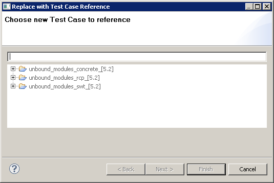
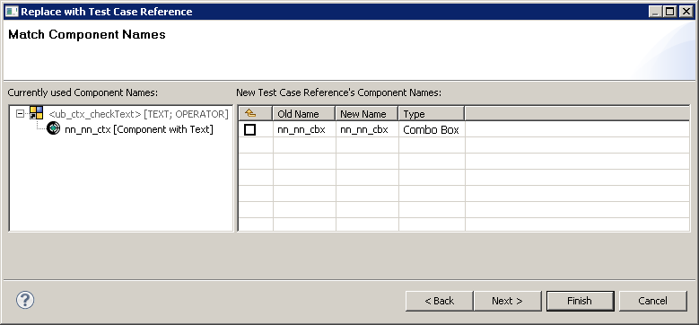

You can replace one or more Test Cases in an editor with another Test Case from your library of Test Cases . This is useful if you have created a module to replace one or more Test Cases and you want to be guided through the replacement process.
![\includegraphics[height=2cm]{lightbulb}](img2.jpg) |
To replace a specific Test Case at all / multiple places where it has been reused, use the option available in the Search Result View 3.11.7. |
- Open the Test Case Editor or Test Suite Editor by double-clicking on the Test Case or Test Suite you want to edit.
- Select the Test Cases you want to replace by single-clicking them. Use »CTRL« to select more than one item.
- Right-click in the editor and select:
| Refactor |
--> |
Replace with Test Case |
. - The first page of a wizard appears in which you can replace selected the Test Cases in a series of steps.
![\includegraphics[height=2cm]{danger}](img1.jpg) |
You may only replace single Test Cases which neither have multiple data sets nor central test data / Excel files as data. |
Page 1: Replacing the Test Cases
- On the first page of the wizard 3.17, you can select a new Test Case to replace the selected Test Cases .
- Browse to and select the Test Case you want to add to the editor.
- Click "Next" to match the component names for the old and new Test Cases , or click "Finish" to replace the selected Test Cases with the bare new Test Case , without any component names transferred.
Figure 3.17: Select Test Case
|

|
Page 2: Matching component names
- On the second page of the wizard 3.18, you can see an overview of component names for the replacement.
- On the left-hand side you can see any component names that were entered for the Test Cases to be replaced. If the component names were propagated 3.13.4, you will see a small yellow arrow on the component name icon.
|
If the old Test Cases contained no component names, then you will see the text no component names. |
- On the right-hand side, you can see the Component Names View , which shows any component names that are required by the new Test Case .
- Use this dialog to transfer any component names from the old Test Cases to the new Test Cases . You can enter component names, or you can leave the new component names as they are. You can also set the checkbox in the Component Names View to propagate the name to the next Test Case in the hierarchy.
- Once you have transferred the component names, you can click "Next" to add further information or you can click "Finish" to replace the selected Test Cases with the new Test Case and the selected component names.
Figure 3.18: Match component names
|

|
Page 3: Further information
- On the final page of the wizard, you can enter a Test Case reference name and a comment for the new Test Case .
- Once you have entered a name and/or a comment, you can click "Finish" to complete the replacement.
Once you have replaced the Test Case , you must manually adapt the parameters for the new Test Case .
Copyright BREDEX GmbH 2014. Made available under the Eclipse Public License v1.0.